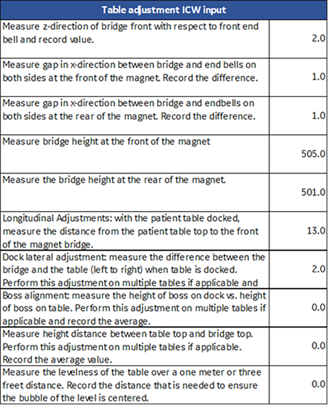

- 00000018WIA301E2A50GYZ
- id_20263681.7
- Jan 28, 2021 2:36:35 AM
Checking the patient handling system with the laser leveling tool
The proper alignment of the entire patient handling system is important for good image quality output from the GE MR scanners.
Prerequisites
| Personnel requirements | |||
|---|---|---|---|
| Required persons | Preliminary requirements | Procedure | Finalization |
| 1 | - | 55 minutes | - |
| Tools and test equipment | |||
|---|---|---|---|
| Item | Quantity | Part number | Manufacturer |
| PH Alignment and Magnet Leveling Kit | 1 | 5897979 | - |
| MR Patient Handling Alignment Macro Tool (Available from the Online Documentation Library) | 1 | DOC2372458 | - |
| Nonmagnetic Titanium Service Tool Kit, Small Set | 1 | 5113258 | - |
| Safety |
|---|
|
Before working in any GE HealthCare MR suite or doing any GE HealthCare service procedure, you must:
If you have any safety concerns at any time, do not begin work or immediately stop work and move to a safe location. Immediately contact your supervisor or site safety officer for instructions on how to proceed. |
About this task
If the check fails/adjustment is required, the FE can raise a separate SR and perform the adjustment during a different visit or during the same visit if there is adequate time. The procedure for making the adjustments is Adjusting the patient handling system with the laser leveling tool.
The patient handling alignment procedure is to be completed using the patient handling and magnet leveling tool kit (5897979) and the MR Patient Handling Alignment Macro Tool (DOC2372458).
Some of the tools included in the patient handling and magnet leveling tool kit (5897979) are specific to the magnet handling service procedures and will not be used during the patient handling alignment procedure. The below table lists the tools that will be used for the patient handling alignment procedure.
| GE part number | Quantity | Part description |
|---|---|---|
| 5831466 | 1 | Laser Level PLS 180R Z |
| 5897974 | 1 | Folding Ruler, 2 meters, FM-DELA.401.00 |
| 5829559 | 1 | Tripod, Vanguard Alta Pro 263AB 100 |
| 5829794 | 1 | Masking Tape, Pink, 0.94 Inch Wide |
| 5830232 | 1 | Horizontal Alignment Laser Target Tool |
| 5830232-2 | 1 | Horizontal Alignment Laser Target Tool - Tall |
| 5831978 | 2 | Vertical Alignment Tool |
| 5832719 | 1 | Table Bridge Boss Alignment Tool |
| 5346292 | 1 | Brass Height Tool |
The macro tool assists the user in identifying target values for aligning the GE MR scanner. The user captures the initial state of the scanner in the macro tool. The macro tool then calculates the ideal state of the scanner. The user adjusts the scanner based on the macro tool output. The user then captures the final state of the scanner in the macro tool.
| Warning | |
|---|---|
Procedure
Tools overview
The patient handling alignment procedure is to be completed using the patient handling and magnet leveling tool kit (5897979) and the MR Patient Handling Alignment Macro Tool (DOC2372458).
Some of the tools included in the patient handling and magnet leveling tool kit (5897979) are specific to the magnet handling service procedures and will not be used during the patient handling alignment procedure. The below table lists the tools that will be used for the patient handling alignment procedure.
| GE part number | Quantity | Part description |
|---|---|---|
| 5437045 | 1 | Scissor Jack |
| 5831466 | 1 | Laser Level PLS 180R Z |
| 5897974 | 1 | Folding Ruler, 2 meters, FM-DELA.401.00 |
| 5829559 | 1 | Tripod, Vanguard Alta Pro 263AB 100 |
| 5829794 | 1 | Masking Tape, Pink, 0.94 Inch Wide |
| 5830232 | 1 | Horizontal Alignment Laser Target Tool |
| 5830232-2 | 1 | Horizontal Alignment Laser Target Tool - Tall |
| 5831978 | 2 | Vertical Alignment Tool |
| 5832719 | 1 | Table Bridge Boss Alignment Tool |
| 5346292 | 1 | Brass Height Tool |
The macro tool assists the user in identifying target values for aligning the GE MR scanner. The user captures the initial state of the scanner in the macro tool. The macro tool then calculates the ideal state of the scanner. The user adjusts the scanner based on the macro tool output. The user then captures the final state of the scanner in the macro tool.
| Warning | |
|---|---|
Checking the alignment of the bridge and rear pedestal (z-dir and x-dir)
Front end bell-bridge longitudinal (z-dir) offset
Procedure
Bridge shoulder-body coil lateral (x-dir) gap front
About this task
Procedure
Checking the alignment of the patient table angle (rotation about y-axis) and offset (x-dir)
Table 1 gap check
Procedure
Table 1 angle and offset check
Procedure
Multi-table configurations
Procedure
Measuring the bridge and rear pedestal heights
Measure the height of the rear pedestal, bridge, and bridge in the body coil, and record the measurements in the macro tool.
About this task
Rear pedestal
Procedure
Bridge
Procedure
Bridge height in the body coil
Procedure
Entering the initial bridge and rear pedestal data in the macro tool
Procedure
Checking the patient table height
Multiple table configuration
Procedure

Boss 1 height
Procedure
- Remove the front table covers and use the boss height gauge to check the height difference between the table and dock bosses. Make sure to slide the boss height gauge in from the side and that the gauge covers both bosses.Note A missing front table cover, as shown in the illustration, may result in 16-channel systems reporting a 32-channel connector is not attached. When the adjustment is complete, replace the front cover to prevent this error.Note The specification for the height difference between the table and dock bosses is less than 1 mm. If the boss height gauge does not slide over both bosses from the side, the bosses are outside of the specification.
Figure 18. Boss height alignment check 
Item Description 1 Dock boss 2 Table boss 3 Boss height gauge - If the boss height alignment is within specifications, select Pass from the drop-down menu in the macro tool. If the alignment is outside of specifications, select Fail from the drop-down in the macro tool.
Figure 19. Boss height alignment pass/fail drop-down 
Table 1 check
Procedure
Casters 1 check
Procedure
Multiple table configurations
Procedure
Doing the pass/fail check
Procedure

Uploading data
Table adjustment ICW input
Procedure
